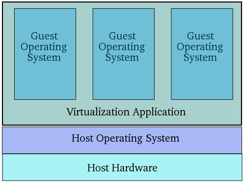

★扫盲一下基本概念
先扫盲几个基本概念。如果你对虚拟机相关的概念已经很清楚，可以跳过本章节。
◇什么是虚拟机？
简单滴说：虚拟机本身是一个软件，可以模拟出一个跟真实环境一模一样的虚拟环境，然后在这个虚拟环境中运行其它软件。
举一个通俗的例子。
想必70后80后的网友都玩过任天堂的红白机（接在电视上的那种）。如今市面上早已没有红白机的踪影。万一你想找一个红白机的游戏怀旧一下，怎么办捏？这时候红白机的模拟器软件就可以帮上忙啦。它可以在你的电脑上虚拟出一个红白机的运行环境，然后再去找几个经典游戏的 ROM 放进去，就可以玩了。此处提到的红白机模拟器，就是本文要介绍的“虚拟机软件”。
如果你想对“虚拟机”这个概念有更深入的了解，可以看维基百科（洋文在“这里”，中文在“这里”）。
◇什么是操作系统虚拟机？
总的来说，虚拟机分为两大类：硬件虚拟机和软件虚拟机。顾名思义，“硬件虚拟机”用来模拟硬件环境，而“软件虚拟机”用来模拟软件环境。
硬件虚拟机有时候也称为“系统虚拟机”（这是本文要讲的重点）；
软件虚拟机有时候也称为“进程虚拟机”或者“应用程序虚拟机”（Java 程序员每天都接触到的 JVM 就属于软件虚拟机）。
为了打字省力，本文后续部分提到的“虚拟机”，均是指“操作系统虚拟机”。
◇啥是“宿主系统”（Host OS）？啥是“访客系统”（Guest OS）？
要熟悉“虚拟机”的使用，首先要搞清楚两个概念：Host OS 和 Guest OS
Host OS（真实系统）
由于虚拟机也是软件，也需要安装在操作系统之上。用来安装虚拟机软件的操作系统，称之为“Host OS”。直译为中文就是“宿主系统”。不过俺更喜欢称之为“真实系统”。
顺便说一下，少数虚拟机软件自带操作系统（也就是自带“Host OS”），可以直接安装在一台裸机上。不过这种虚拟机主要用于企业用户，大伙儿平时用不到。
Guest OS（虚拟系统）
运行在虚拟机软件内部的操作系统，称为“Guest OS”。直译为中文就是“访客系统”。不过俺更喜欢称之为“虚拟系统”。
示意图
为了形象一点，俺从网上剽窃了一张示意图。从下图可以直观地看出“真实系统”与“虚拟系统”的关系。

★虚拟机软件有些啥功能？
考虑到本博客的用户群，本文重点介绍“面向桌面用户”的虚拟机软件。这类软件有不少，用的比较多、名气比较大的是 VMware Workstation（以下简称 VMware） 和 VirtualBox（以下简称 VBox）。下面的介绍，先拿 VMware 来举例。
◇同时运行多个操作系统
这是最重要的一个特性。
在没有虚拟机的年代，电脑一次只能运行一个操作系统。有了虚拟机之后，一台电脑可以同时运行 N 个不同的操作系统。N 的大小取决于电脑的CPU 是否足够强劲、物理内存是否够大、硬盘是否够大。
后面俺会提到：同时运行多个操作系统有啥好处。
◇快照功能
很多虚拟机软件具有快照（Snapshot）的功能。这个功能比较重要，俺说详细点。
首先，快照是针对某个虚拟系统（Guest OS）而言的。当你为某个虚拟系统创建快照，则虚拟机软件会把这个虚拟系统的所有信息（包括内存状态、硬盘状态、等等）都保存起来。当你需要的时候，可以再切换到这个快照。一旦切换到某个快照，虚拟系统（Guest OS）就回到当初创建快照的那个状态。
大多数虚拟机软件都支持树状结构的快照，也就是说，你可以在某个快照之上再创建快照。这就好比大伙儿都熟悉的文件目录结构——可以在某个目录内再创建目录，最终形成一个树形结构。
为了给大伙儿一个直观的印象，放一张截图：

从这张截图可以看出，这是一个装了 Windows 2000 的虚拟系统，图中名为“baseinstall”的快照，是一个干净的 Win2000 系统。然后基于这个快照，再创建4个快照，分别针对 Win2000 的 SP1、SP2、SP3、SP4。
◇对 CPU 的虚拟
通常而言，只有 IT 技术人员（尤其是程序猿）会关心虚拟机对 CPU 的虚拟。如果你不是 IT 技术人员，请跳过本小节，看下一个小节——“对内存的虚拟”。
CPU 是硬件系统的心脏。对虚拟机来说，最重要的功能就是虚拟 CPU 了。对 CPU 的虚拟包括两种：
1. 虚拟同种类型的 CPU
2. 虚拟异种类型的 CPU
第一种是比较常见的——大部分虚拟机软件都只能模拟同种类型的 CPU。举个例子：前面提到的 VMware 和 VBox 只能安装在 x86 芯片的电脑上，而且只能虚拟出 x86 的运行环境。
第二种类型的虚拟机就比较牛B了。比如有些虚拟软件虽然安装在 x86 的硬件系统上，但居然可以模拟各式各样的其它芯片（比如“ARM、SPARC、MIPS、PowerPC”等等）。有机会的话，俺会聊聊这类虚拟机在软件开发中的用途。
◇对内存的虚拟
对内存的虚拟也属于常见功能，每个虚拟机软件都具备此功能。
对用户来说，你只需关心：要分配给虚拟系统多大的内存。具体要分配多大的内存，取决于两个因素：
1. 被虚拟的操作系统是什么类型
2. 这个虚拟系统用来干嘛
举几个例子：
假如要安装一个虚拟的 DOS 来玩一些古老的 DOS 游戏，那只需要为它分配几个 MB 的内存；反之，如果要安装一个虚拟的 Linux 用来跑大型的数据库服务，那可能就需要分配几个 GB 的内存。
当然啦，分配给每一个 Guest OS 的内存都不能超过 Host OS 的物理内存大小；并且，【同时】运行的 Guest OS 的内存总和也不能超过 Host OS 的物理内存大小。
◇对硬盘的虚拟
说完 CPU 和内存，再来说说硬盘。
常见的虚拟机软件可以把一个大文件虚拟成一个硬盘，该分区上的所有数据（包括“文件、目录”等）、其实都存储在这个大文件内部。
因为文件是很方便 COPY 的，所以用一个大文件来虚拟一个硬盘会带来如下的很多好处。
1. 备份
可以把安装好的虚拟系统备份起来。万一你的电脑坏了，换了新电脑，直接用备份的虚拟机拷贝回去，省得再重装系统。
2. 共享
比如公司里某个测试人员搭建了一个虚拟系统用来进行某某软件的测试。那么，其他测试人员只需要把这个虚拟系统的硬盘文件 COPY 过去，不需要再重新搭建一次。
◇对网卡的虚拟
对网卡的虚拟跟本文后续的内容比较相关，俺多说几句。
以 VMware 为例，它支持如下三种类型的虚拟网卡：
1. Bridge 模式
在这种模式下，虚拟系统的网卡跟你物理系统的网卡几乎一样。
外部网络对虚拟系统的网卡是可见的；虚拟系统的网卡对外部网络也是可见的。
2. NAT 模式
外部网络对虚拟系统的网卡是可见的；虚拟系统的网卡对外部网络是不可见的。
换句话说，NAT 模式可以起到【单向】防火墙的效果。这种模式用得最多。
3. Host-Only 模式
外部网络对虚拟系统的网卡是【不可见】的；虚拟系统的网卡对外部网络也是不可见的。
这种模式相当于【双向】防火墙的效果。相对而言，这种模式用得较少。当你想搭建一个跟外界隔离的虚拟内部网络，可以使用这种模式。
后面会介绍这几种模式的应用场景。
◇对光驱的虚拟
虚拟机软件通常可以用两种方式来虚拟光驱：
1. 把虚拟光驱直接映射到你电脑的物理光驱
2. 把虚拟光驱映射到某个光盘镜像（比如 ISO 文件）
第二种模式用得比较多。如果你习惯了这种模式，基本上就不再需要使用传统的光盘了（省去了买盘刻盘的麻烦）。
比方说要在虚拟系统中安装 Office，你只需要把虚拟系统的光驱指向 Office 的光盘镜像文件。然后，你在虚拟系统里面就可以看到这张光盘了。
◇其它硬件的虚拟
除了上述这些，虚拟机软件还可以用来虚拟：USB、声卡、甚至软驱。不过这些用得不多，限于篇幅，俺就不展开了。
回到本系列的目录
版权声明
本博客所有的原创文章，作者皆保留版权。转载必须包含本声明，保持本文完整，并以超链接形式注明作者编程随想和本文原始地址：
https://program-think.blogspot.com/2012/10/system-vm-1.html
本博客所有的原创文章，作者皆保留版权。转载必须包含本声明，保持本文完整，并以超链接形式注明作者编程随想和本文原始地址：
https://program-think.blogspot.com/2012/10/system-vm-1.html